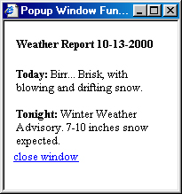

JavaScript и COM
Как неоднократно упоминалось в книге, одной из самых замечательных особенностей РНР является простота его интеграции с другими технологиями. Примеры такой интеграции уже встречались при описании работы с базами данных, ODBC и XML. В этой главе будет показано, как просто организуется работа РНР в комбинации с JavaScript и приложениями на базе СОМ. Ниже приводятся общие сведения о JavaScript и СОМ, подкрепленные примерами их использования в РНР. К концу главы вы узнаете немало полезного об этих замечательных технологиях и о том, как они применяются в РНР.
Сценарный язык JavaScript обладает чрезвычайно богатыми возможностями для разработки Интернет-приложений, работающих как на клиентской, так и на серверной стороне. У этого языка есть немало интересных особенностей, и одна из них — возможность обработки не только данных, но и событий. Событие определяется как некоторое действие, выполненное в контексте браузера, — например, щелчок мышью или загрузка страницы.
Любой программист с опытом работы на РНР, Pascal или C++ освоит JavaScript без особого труда. Если вы не программировали на этих языках, не огорчайтесь — JavaScript изучается легко. Разработчики JavaScript (как, впрочем, и разработчики РНР) в первую очередь ориентировались на решение реальных, практических задач.
Если вы хотите воспользоваться средствами обработки,событий JavaScript, сохранив при этом многочисленные преимущества РНР, могу вас обрадовать — РНР интегрируется с JavaScript так же легко, как и с HTML. В сущности, JavaScript неплохо дополняет РНР — на нем удобно делать то, что неудобно делать в РНР, и наоборот.
Но прежде чем интегрировать РНР с JavaScript, следует учесть, что некоторые пользователи отключают поддержку JavaScript в своих браузерах или работают в браузерах, вообще не поддерживающих JavaScript (представьте, такое тоже бывает!). В РНР предусмотрены простые средства для распознавания таких ситуаций.
Правильное определение возможностей браузера избавит пользователей от неприятностей при посещении вашего сайта. Ничто так не действует на нервы, как град раздражающих сообщений «JavaScript Error» или недоступность каких-то средств сайта из-за того, что использованные вами технологии не поддерживаются браузером. К счастью, в РНР предусмотрено простое средство для проверки возможностей браузера — стандартная функция get_browser( ).
get_browser( )
Функция get_browser( ) возвращает информацию о возможностях браузера в виде объекта. Синтаксис:
object get_browser([string агент])
Необязательный параметр агент используется для получения характеристик конкретного браузера. Как правило, функция get_browser( ) вызывается без параметров, поскольку по умолчанию она использует глобальную переменную РНР $HTTP_USER_AGENT.
Стандартный список возможностей браузера хранится в файле browcap, путь к которому определяется параметром browcap в файле php.ini. По умолчанию эта строка выглядит следующим образом:
;browcap = extra/browcap.ini
Файл browser.ini был разработан компанией cyScape, Inc. Последняя версия этого файла находится по адресу http://www.cyscape.com/browcap. Загрузите и распакуйте этот файл в каталог на сервере. Запомните имя каталога, оно понадобится вам для обновления параметра browcap в файле php.ini.
В принципе, после загрузки browcap.ini и редактирования файла php.ini вы можете включать в свои программы проверку возможностей браузера. Впрочем, я рекомендую сначала открыть файл browser.ini и ознакомиться с его структурой, а затем просмотреть листинги 15.1 и 15.2. В листинге 15.1 приведен очень простой пример отображения всех возможностей браузера в самом браузере. Листинг 15.2 ограничивается лишь одной возможностью — поддержкой JavaScript.
Листинг 15.1. Отображение всех атрибутов браузера
<?
// Получить информацию о браузере
$browser = get_browser();
// Преобразовать $browser в массив
Sbrowser = (array) Sbrowser;
while (list ($key, $value) = each ($browser)) :
// Присвоить нули пустым элементам массива
if ($value == "") : $value = 0;
endif;
print "$key : $value <br>";
endwhile;
?>
Для браузера Microsoft Internet Explorer 5.0 листинг 15.1 выводит следующий результат:
browser_name_pattern : Mozilla/4\.0 (compatible; MSIE 5\..*)
parent IE 5.0
browser : 5.0
version : 15
majorver : #5
minorver : #5
frames : 1
tables : 1
cookies : 1
backgroundsounds : 1
vbscript : 1
javascript : 1
javaapplets : 1
activexcontrols : 1
win16 : 0
beta : 0
ak : 0
sk : 0
aol : 0
crawler : 0
cdf : 1
В листинге 15.2 приведен простой, но эффективный сценарий, который при помощи файла browcap.ini определяет, включена ли поддержка JavaScript в браузере.
Листинг 15.2. Проверка поддержки JavaScript
<?
$browser = get_browser( );
// Преобразовать $browser в массив $browser = (array) $browser;
if ($browser["javascript"] == 1) :
print "Javascript enabled!";
else :
print "No javascript allowed!";
endif;
?>
Листинг 15.2 проверяет, присутствует ли ключ javascript для заданного браузера. Если ключ присутствует и равен 1, в браузере выводится сообщение о поддержке JavaScript. В противном случае выводится сообщение об ошибке. Конечно, в реальной программе вместо выдачи сообщения следует выполнить какие-нибудь полезные действия.
Следующие два примера показывают, как легко РНР,интегрируется с JavaScript. Листинг 15.3 определяет параметры экрана (разрешение и цветовую глубину) средствами JavaScript и затем выводит их средствами РНР. Листинг 15.4 (см. следующий раздел) показывает, как при помощи шаблона РНР во временном (pop-up) окне, вызванном из кода JavaScript, выводится информация о ссылке, на которой щелкнул пользователь.
Листинг 15.3. Определение цветовой глубины и разрешения экрана
<html>
<head>
<title>Browser Information</title>
</head>
<body>
<script language="Javascriptl.2">
<!--//
document.write('<form method=POST action ="<? echo $PHP_SELF; ?>">');
document.write('<input type=hidden name=version value=' + navigator.appVersion + '>');
document.write('<input type=hidden name=type value=' + navigator.appName + '>');
document.write('<input type=hidden name-screenWidth value=' + screen.width +'>');
document.write('<input type=hidden name=screenHeight value=' + screen.height + '>'};
document.write('<input type=hidden name=browserHeight value=' + window.innerWidth + '>');
document.write('<input type=hidden name=browserWidth value=' + window.innerHeight + '>');
//-->
</script>
<input type="submit" value="Get browser information"><p>
</form>
<?
echo "<b>Browser:</b> $type Version: $version<br>";
echo "<b>Screen Resolution:</b> $screenWidth x $screenHeight pixels.<br>";
if ($browserWidth != 0) :
echo "<b>Browser resolution:</b> $browserWidth x $browserHeight pixels.";
else :
echo "No javascript browser resolution support for Internet Explorer";
endif;
?>
</body>
</html>
Динамическое создание временных окон
В JavaScript предусмотрены простые и удобные средства для работы с окнами браузера. В частности, JavaScript позволяет отображать временные окна с вспомогательной информацией, не оправдывающей создания и загрузки отдельной страницы. Напрашивается очевидная идея — построить универсальный шаблон, который будет использоваться для всех временных окон. Все, что для этого потребуется, — РНР. В листинге 15.4 показано, как файл РНР window.php вызывается из JavaScript. В этом файле реализован очень простой шаблон с директивой INCLUDE для включения файла, идентификатор которого передается window.php при вызове из JavaScript.
Для читателей, не имеющих опыта программирования на JavaScript, я включил в программу подробные комментарии. Значение переменной winld, передаваемой сценарию РНР window.php, задается внутри ссылки в основном коде HTML. Когда пользователь щелкает на ссылке, вызывается функция newWindow( ), определенная в JavaScript. Чтобы вы лучше поняли, как это происходит, рассмотрим следующую ссылку:
<а href="#" onClick="newWindow(1):">Contact us</a><br>
Как видите, я просто включаю в href значение "#", поскольку ссылка генерируется обработчиком события onClick в JavaScript. Установка обработчика приводит к тому, что при щелчке на ссылке вызывается функция newWindow( ). Обратите внимание на параметр, передаваемый при вызове этой функции (в приведенном примере — 1). Содержащийся в нем идентификатор используется сценарием РНР для выбора отображаемой информации. Вы можете передать любое число — при условии, что оно соответствует имени файла, отображаемого в сценарии РНР. Внимательно просмотрите листинг 15.4. Чтобы вам было легче ориентироваться, я создал три простых файла *.inc, соответствующих ссылкам в этом листинге.
Листинг 15.4. Динамическое построение временных окон
<html>
<head>
<title>Listing 15-4</title>
<SCRIPT language="Javascript">
// Объявить переменную Javascript
var popWindow;
// Объявить функцию newWindow
function newWindow(winID)
{
// Объявить переменную winURL. Присвоить ей
// имя файла РНР с последующими данными.
var winURL = "Listingl5-5.php?winID=" + winID;
// Если временное окно не существует или закрыто.
// открыть его.
if (! popWindow | popWindow.closed) {
// Открыть новое окно шириной 200 пикселов и высотой
// 300 пикселов, расположенное на расстоянии 150 пикселов
// от левого края и 100 пикселов от верхнего края
// основного окна.
popWindow = window.open(winURL. 'popWindow',
dependent.width=200.height=300.left=150 ,top=100');
}
// Если временное окно уже открыто.
// активизировать его и обновить содержимое
// в соответствии с winURL.
else {
popWindow.focus();
popWindow.location = winURL;
}
}
//-->
</SCRIPT>
</head>
<body bgcolor="#ffffff" text="#000000" link="#808040"'vlink="#808040" alink="#808040">
<a href="#" onClick="newWindow(1);">Contact Us</a><br>
<a href="#" onClick="newWindow(2):">Driving Directions</a><br>
<a href="#" onClick="newWindow(3);">Weather Report</a><br>
</body>
</html>
Когда пользователь щелкает на одной из ссылок в листинге 15.4, программа создает временное окно и загружает в него содержимое, полученное в результате вызова window.php. Сценарию window.php передается переменная winID, по которой определяется файл, включаемый в сценарий РНР. Сценарий window.php приведен в листинге 15.5.
Листинг 15.5. Сценарий window.php
<html>
<head>
<title>Popup Window Fun</title>
</head>
<body bgcolor="#ffffff" text="#000000" link="black" vlink="gray" alink="#808040">
<table width="100%" border="0" cellpadding="0" cellspacing="0">
<tr>
<td>
<?
// Включить файл, имя которого определяется
// переданным параметром.
INCLUDE("$winID.inc");
?>
</td>
</tr>
<tr>
<td>
<a href="#" onClick="parent.self.closet);
">close window</a>
</td>
</tr>
</table>
</body>
</html>
Остается лишь создать файлы для ссылок в листинге 15.4. Поскольку в ссылках передаются три уникальных идентификатора (1, 2 и 3), мы должны создать три файла. Первый файл, содержащий контактную информацию, сохраняется с именем Line:
<td>
<h4>Contact Us</h4>
<table> <tr>
<li>email: <a href="mailto:wj@wjgilmore.com">wj@wjgilmore.com</a> <li>phone: (555) 867 5309 <li>mobile: (555) 555 5555 </ul> </td>
</tr> </table>
Следующий файл (местонахождение) сохраняется с именем 2.inс.
<table>
<tr>
<td>
<h4>Driving Directions</h4>
<ol>
<li>Turn left on 1st avenue.
<li>Enter the old Grant building.
<li>Take elevator to 4th floor.
<li>We're in room 444.
</td>
</tr>
</table>
Последний файл (сводка погоды) сохраняется с именем 3.inc. Обратите внимание на вызов функции РНР, возвращающей текущую дату, — этот пример наглядно показывает, как легко РНР интегрируется с JavaScript: ,
<table>
<tr>
<td>
<h4>Weather Report <?=date("m-d-Y");?></h4>
<b>Today:</b> Birr... Brisk, with blowing and drifting snow.<br><br>
<b>Tonight:</b> Winter Weather Advisory. 7-10 inches snow expected.
</td>
</tr>
</table>
На рис. 15.1 показано, как выглядит временное окно, открываемое по третьей ссылке.

Рис. 15.1. Сводка погоды во временном окне
Наше короткое знакомство с интеграцией PHP/JavaScript подходит к концу. Мы рассмотрели несколько простых, но вполне реальных примеров, которые при желании легко адаптируются для более сложных целей. При объединении РНР с JavaScript или любой другой технологией, ориентированной на работу на стороне сервера, необходимо правильно определить возможности браузера, чтобы предотвратить случайные ошибки. Всегда полезно поэкспериментировать с другими технологиями, интегрируемыми с кодом РНР; только проследите за тем, чтобы не отпугнуть пользователей от сайта недоступными возможностями или содержанием, которое невозможно просмотреть.
Следующий раздел посвящен СОМ — еще одной технологии, с которой легко работать средствами РНР.
Технология СОМ (сокращение от «Component Object Model», то есть «модель составного объекта») обеспечивает взаимодействие между приложениями, работающими на разных языках и платформах. Такое взаимодействие в значительной мере способствует идее построения многократно используемых, легко сопровождаемых и адаптируемых программных компонентов (в последнее время к этим трем принципам проявляется повышенное внимание в области компьютерных технологий). Хотя СОМ обычно рассматривается как спецификация, ориентированная в первую очередь на продукты Microsoft, поддержка СОМ уже реализована во многих языках (например, в РНР, Java, C++ и Delphi) и существует на многих платформах, включая Windows, Linux и Macintosh.
Что же вам даст объединение СОМ с РНР? Во-первых, средства СОМ позволяют напрямую взаимодействовать со многими приложениями Microsoft. Ниже рассмотрен интересный пример — форматирование и вывод в Microsoft Word записей базы данных, полученных из Web. В следующем разделе вы увидите, как легко решается эта задача.
 На
нескольких страницах, посвященных
технологии СОМ, эту огромную тему нельзя
осветить даже поверхностно. Ситуация
осложняется тем, что возможности
использования СОМ в языке РНР почти не
документируются. За дополнительной
информацией о механизме работы СОМ
обращайтесь к ресурсам, перечисленным в
конце этой главы.
На
нескольких страницах, посвященных
технологии СОМ, эту огромную тему нельзя
осветить даже поверхностно. Ситуация
осложняется тем, что возможности
использования СОМ в языке РНР почти не
документируются. За дополнительной
информацией о механизме работы СОМ
обращайтесь к ресурсам, перечисленным в
конце этой главы.
РНР содержит несколько стандартных функций для работы с СОМ. Учтите, эти функции поддерживаются только в версии РНР для Windows! Прежде чем переходить к примерам, мы рассмотрим все эти функции.
Стандартные функции РНР, предназначенные для работы с СОМ, создают объекты СОМ и используют их свойства и методы. Пожалуйста, не забывайте о том, что эта поддержка присутствует только в версии РНР для Windows. Следующие примеры были протестированы для Microsoft Word 2000. За информацией об объектах, методах и событиях, используемых в программе, обращайтесь на web-сайт MSDN (http://msdn.microsoft.com/library/officedev/off2000/ wotocobjectmodelapplication.htm).
Создание экземпляров объектов СОМ
Экземпляры объектов СОМ создаются вызовом new, как при обычном объектно-ориентированном программировании. Синтаксис:
object new СОМ("обьекг.класс" [, string удаленный_адрес])
Параметр объект.класс определяет модуль СОМ, присутствующий на сервере. Необязательный параметр удаленный_адрес используется в том случае, если объект СОМ создается на удаленном компьютере. Допустим, вы хотите создать экземпляр объекта для приложения MS Word. При этом приложение Microsoft Word запускается так, словно вы запустили его вручную (разумеется, для этого MS Word должен быть установлен на компьютере). Команда имеет следующий синтаксис:
$word=new COM("word.application") or die("Couldn't start Word!");
После того как экземпляр объекта СОМ будет создан, можно приступать к работе с различными методами и свойствами этого объекта. Допустим, вы захотели активизировать окно Word. Следующая команда изменяет атрибут видимости объекта, в результате чего графический интерфейс приложения отображается на экране:
$word->visible = 1:
He огорчайтесь, если эта команда выглядит непонятной. Вызов методов объектов СОМ рассматривается в следующем разделе.
Вызов методов объекта СОМ
Методы объектов СОМ вызываются в типичном для ООП формате, с использованием ссылки из объектной переменной. Синтаксис:
объект->имя_метода([значение, ...])
Объект соответствует экземпляру объекта СОМ, созданному описанным выше способом. Параметр имя_метода определяет имя метода, определенного в классе объект. Необязательный параметр значение позволяет передавать параметры при вызове методов, допускающих (или требующих) дополнительных данных. Как и при вызове обычных функций, параметры разделяются запятыми. Если после создания экземпляра объекта СОМ, представляющего MS Word, вы захотите создать в приложении новый документ, просто вызовите соответствующий метод. Задача решается методом add( ) субкласса Documents экземпляра $word:
$word->Documents->Add( );
Обратите внимание: для вызова методов используется очень логичный синтаксис в стиле ООП. В результате выполнения этой команды в окне приложения MS Word открывается новый документ.
com_get( )
Функция com_get( ) возвращает значение свойства объектов СОМ. Синтаксис:
mixed com_get(resource объект, string свойство)
Первый параметр определяет экземпляр объекта СОМ, а второй — атрибут класса, к которому относится данный экземпляр.
<?
// Создать экземпляр объекта для приложения MS Word
$word=new COM("word.application") or die("Couldn't start Word!");
// Режим CapsLock либо включен (свойство CapsLock = 0),
// либо выключен (свойство CapsLock = 1).
$flag = com_get(Sword->Application.CapsLock)
// Преобразовать значение Sflag (0 или 1) в логическое значение
if ($flag == 1) :
$flag = "YES";
else :
$flag = "NO";
endif;
// Вывести сообщение
print "CAPS Lock activated: $flag";
$word->Quit();
?>
Существует и другое решение — значение атрибута CapsLock можно получить при помощи стандартного для ООП синтаксиса обращения к атрибутам. В предыдущем примере для этого следует заменить строку
$flag = com_get($word->Application,CapsLock)
следующей строкой:
$flag = $word->Application->CapsLock:
Атрибуты объекта позволяют получать разнообразную информацию о характеристиках приложения. Более того, многим атрибутам можно присваивать новые значения. Это делается при помощи функции com_set( ).
com_set( )
Функция com_set( ) присваивает атрибуту объекта новое значение:
void com_set(resource объект, string свойство, mixed значение)
Первый параметр определяет экземпляр объекта СОМ, а второй — атрибут класса, к которому относится данный экземпляр. Третий параметр определяет новое значение свойства.
Следующая программа (листинг 15.6) запускает Microsoft Word и активизирует окно приложения. Затем она создает новый документ, добавляет в него строку текста и выбирает режим сохранения документа (атрибут DefaultSaveFormat) в текстовом формате. Результат виден при открытии окна Сохранить как (Save As) — в списке Тип файла (Save As Type) автоматически выбирается строка Только текст (Text Only). После сохранения документа приложение Microsoft Word закрывается.
Листинг 15.6. Выбор типа документа по умолчанию
<?
// Создать экземпляр объекта для приложения MS Word
$word-new COMC'word.application") or die("Couldn't start Word!");
// Активизировать окно MS Word $word->visible = 1;
// Создать новый документ $word->Documents->Add();
// Вставить в документ фрагмент текста
$word->Selection->Typetext("php's com functionality is cool\n");
// Выбрать текстовый режим сохранения
$ok = com_set($word->Application, DefaultSaveFormat, "Text");
// Запросить у пользователя имя и сохранить документ.
// Обратите внимание: по умолчанию документ сохраняется
// в текстовом формате! $word->Documents[l]->Save;
// Выйти из MS Word
$word->Quit();
?>
Существует и другое решение — новое значение атрибута DefaultSaveFormat можно присвоить непосредственно, как обычной переменной. В листинге 15.6 для этого следует заменить строку
$ok = com_set($word->Application, DefaultSaveFormat, "Text");
следующей строкой:
$word->Application->DefaultSaveFormat = "Text";
Итак, вы получили общее представление об управлении приложениями Windows через поддержку СОМ в РНР. Мы переходим к занимательному примеру, кото-
рый наглядно показывает, каких полезных и впечатляющих результатов можно добиться при помощи СОМ.
Запись информации в документ Microsoft Word
Допустим, вам потребовалось отформатировать информацию, загруженную из базы данных, в документе Word для построения отчета. Весь процесс автоматизируется всего в нескольких строках кода РНР. Для демонстрационных целей я воспользуюсь таблицей addressbook из проекта адресной книги, приведенного в конце главы 12. Алгоритм работы сценария выглядит следующим образом:
Программный код приведен в листинге 15.7.
Листинг 15.7. Запись информации в документ Microsoft Word <?
<?
// Создать соединение с сервером MySQL
$host = "localhost";
$user = "root";
$pswd = "";
$db = "book";
$address_table = "addressbook";
mysql_connect($host. $user, $pswd)
or die("Couldn't connect to MySQL server!");
mysql_select_db($db) or die("Couldn't select database!");
// Выбрать из базы данных все записи
$query = "SELECT * FROM $address_table ORDER BY lastjiame";
Sresult = mysql_query($query):
// Создать новый объект COM для приложения MS Word
$word=new COM("word.application") or die("Couldn't start Word!");
// Активизировать окно MS Word $word->visible = 1;
// Открыть пустой документ. $word->Documents->Add( );
// Перебрать записи из таблицы адресов
while($row = mysql_fetch_array($result));
$last_name = $row["last_name"];
$first_name = $row["first_name"];
$tel = $row["tel"];
$email = $row["email"];
// Вывести данные таблицы в открытый документ Word.
$word->Selection->Typetext("$last_name. $first_name\n"); $word->Selection->Typetext("tel. $tel\n"): $word->Selection->Typetext("email. $email:\n");
endwhile;
// Запросить у пользователя имя документа.
$word->Documents[l]->Save;
// Выйти из MS Word
$word->Quit();
?>
При всей простоте рассмотренный пример наглядно показывает, как писать приложения РНР для пересылки содержимого базы данных в приложения Windows. Можно написать и более сложное приложение, обеспечивающее синхронизацию данных, полученных из Web, из Microsoft Outlook. Все, что для этого нужно — получить ссылку на объекты, свойства и методы Outlook, после чего можно переходить к экспериментам (обзор объектной модели всех приложений семейства Office приведен по адресу http://www.microsoft.com/officedev/articles/Opg/toc/PGTOC.htm).
Ниже перечислены ссылки на некоторые полезные ресурсы, посвященные СОМ и найденные мной в Интернете:
Эта глава в очередной раз показала, как легко РНР интегрируется с внешними технологиями — а именно, JavaScript и COM (Component Object Model). В частности, были рассмотрены следующие темы:
Интеграция этих технологий с РНР способна расширить функциональные возможности ваших приложений по нескольким направлениям. JavaScript позволяет выполнять на стороне клиента различные операции с окном и браузером, а также производит проверку данных при заполнении форм. При помощи СОМ можно создавать программы, напрямую работающие с многими распространенными приложениями (например, из семейства Office), благодаря чему ваши программы становятся более удобными и обретают новые возможности. Последняя глава посвящена теме, постоянно занимающей умы многих программистов и администраторов, — безопасности. В этой главе будут представлены ключевые проблемы из области безопасности — защита сценариев, шифрование и коммерческие средства проверки данных.